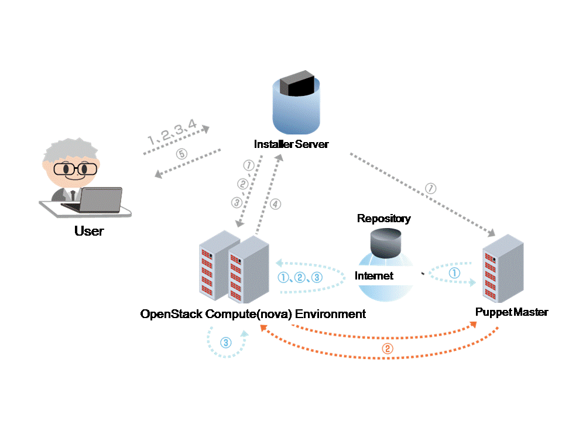

Sprinkle
Declarative dependency-based configuration management and server provisioning
Developers and DevOps
Ya' know, devops, that funny grey area between sweet agile development and system administration?
Typical questions in devops
- "are all my project dependencies installed?"
- "is the right version of Ruby/Python activated?"
- "has this box been configured to mount my EBS drive in
/etc/fstab?" - "is the database server even running?"
... Puppet is hardly the answer.
A few grudges with puppet
Puppet was designed for large scale deployments, but I'm only managing 5 boxes.
... and almost immediately I'm forced to use virtualisation to test my puppet script.
... and provision a puppet master node.
... and even upon deployment I have to sit around for 30 minutes to see if stuff actually worked.
I don't like finding out there aren't already classes for the thing I want to manage.
But you can use puppet apply and do everything locally!
you say. Well...
My grudges with 'puppet apply'
I don't really want to install all those packages on my dev machine.
I'd much rather be affecting a remote machine while editing the puppet script locally.
I don't want to wait 30 seconds before I know whether my 1 line change in my puppet script made any difference to the world.
More grudges with 'puppet apply'
Say I use a VM to make the script. I have no idea whether it'd actually work in the networking environment, say, up in the cloud.
Sprinkle is your friend.
Overview of Sprinkle
- A Ruby
- ... dependency-based
- ... push-based
- ... sorta-idempotent
- ... configuration management tool
- ... that works over SSH
- ... (optionally) using Capistrano
Basement Level 2
Cornify
Some limitations...
- Testing is still a bitch.
- You will need to iteratively
- Development of such a script is much faster than making a Puppet script.
- SSH access to every machine requires provisioning.
- SSH key management
- Often requires SSH root access (necessarily less secure)
Trifecta of Sprinkle
Everything you need to know to start writing some scripts:
- 'Packages'
- Policies
- Deploy delivery
1.1 Packages
Loosely, named packages but could also mean
- packages
- running processes
- users
- groups
- configuration files
- ... anything expressible on the shell
1.2 Packages (example)
# install.rb
package :ruby do
description 'Ruby Virtual Machine'
version '1.8.6'
source "ftp://ftp.ruby-lang.org/pub/ruby/1.8/ruby-#{version}-p111.tar.gz"
requires :ruby_dependencies
end
package :ruby_dependencies do
description 'Ruby Virtual Machine Build Dependencies'
apt %w( bison zlib1g-dev libssl-dev libreadline5-dev libncurses5-dev file )
end
package :mysql, :provides => :database do
description 'MySQL Database'
apt %w( mysql-server mysql-client )
end
Included install primitives: apt, .deb, yum, .rpm, Homebrew. When in doubt install from source and/or shell out into bash using the runner primitive.
(example from Sprinkle GitHub README)
1.3 Packages (example)
# install.rb
package :service_user do
description "Ensure there's a no-login user called 'service'"
service_user = 'service'
runner "useradd -m #{service_user} --shell /usr/sbin/nologin"
verify do
has_user "#{service_user}"
has_directory "/home/#{service_user}"
end
end
Ensure a user exists.
2. Policies
What servers should have what roles.
policy :rails, :roles => :app do
requires :rails, :version => '2.1.0'
requires :appserver
requires :database
requires :webserver
requires :scm
end
3.1 Deploy Delivery
Typically, we delegate the dishing-out of shell commands to a multitude of servers to Capistrano...
deployment do
delivery :capistrano do
recipes 'deploy'
end
end
3.2 Deploy Delivery
Alternatively, administer your local machine.
deployment do
delivery :local
end
4. Invoking sprinkle
Easy as pie...
$ sprinkle -c -s install.rb
Thanks!
By Hok Shun Poon
Global State
Set data-state="something" on a slide and "something"
will be added as a class to the document element when the slide is open. This let's you
apply broader style changes, like switching the background.